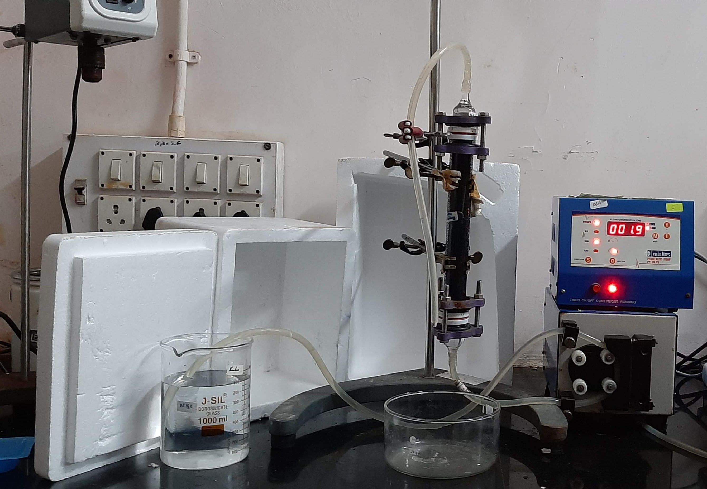
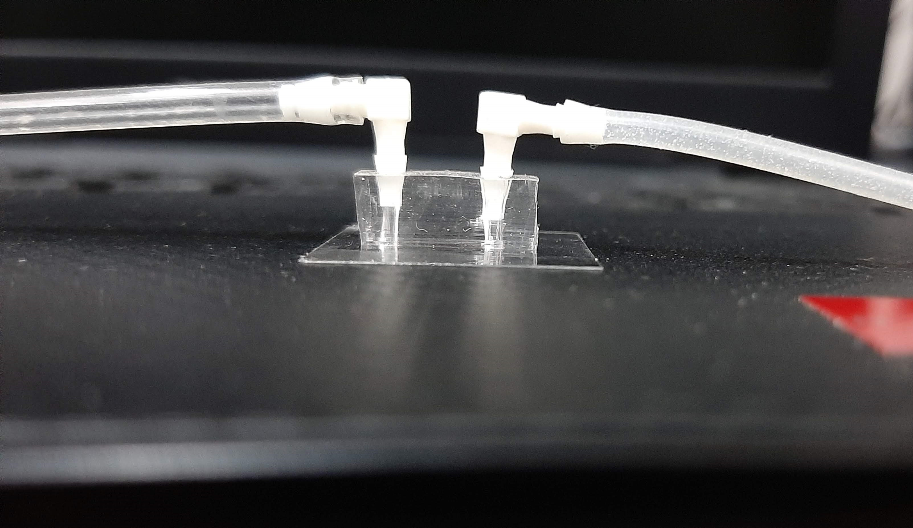

Read about my PhD research
Introduction
Availability of safe drinking water is of paramount importance for the survival of human race but, the conventional disinfection techniques commonly employed in the developed world, have many limitations like formation of harmful disinfection by-products, need for high capital and energy investments, etc. This makes them unappealing for use in under-developed or developing countries. To tackle this issue, we need to develop advanced yet affordable disinfection technologies that can kill a wide range of pathogens, while exhibiting less dependence on chemicals and energy. At the same time, they must be easy to implement, and maintain. In my P.hD. I try to formulate systems and devices to acheive this goal, using metal nanoparticles, that are known for their antimicrobial properties and hold significant promise in this regard.

Designing gravity-assisted water purification columns using nanoparticle impregnated
activated carbon
Bactericidal nanoparticles have got significant attention from researchers around the globe since past few decades because of their ability to kill pathogenic microorganisms in water without producing harmful byproducts. Therefore, they hold excellent potential for use in gravity-assisted point of use water disinfection systems, which could help millions of people to get access to clean drinking water. However, designing such a device which is efficient enouh to be deployed for regular use still remains a challenge as the throughput of such columns is still on the lower side unless assisted by energy intensive external devices such as pumps. Moreover, the decontamination potential usually is transient in nature and therefore, columns need to be replaced frequently. My research at IIT bombay is aimed at developing methods and design moduled to circumvent these issues, and help design a gravity based water purification column system that has low manufacturing costs, is portable, has a lifetime long enough to justify its manufacturing costs and has a high enough throughput to support a small family.

Using microfluidics for understanding bacterial cell behaviour in presence of nanoparticles
To develop efficient water disinfection systems, it is crucial to understand the interactions that occur between bacteria and nanoparticles when they come in contact as well as to investigate the motility patterns of bacterial cells through porous media as found inside a purification column. In my lab, I use carefully designed microfluidic devices to mimic these situatons and investigate the mechanisms and patterns of bacterial behaviour, and try to unravel how hydrodynamics govern the formation, morphology and distribution of biofilm streamers inside such devices.